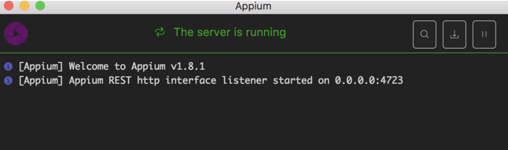

Mobile
Carina framework provides a useful and elegant way of Mobile (Android and iOS) Test Automation. The best practices have a lot in common with web automation, so it's highly recommended to look through Web automation article.
Mobile special requirements:
To run mobile tests, Appium is used instead of Selenium. There are 2 versions of Appium: desktop and console ones, and both are good for Carina. Appium must be running every time before the test run.

Android special requirements:
- Android SDK (part of Android Studio) is an important component for work. Pay attention that after installing Android Studio you sometimes (depends on a version) need to additionally install ADB (Mac only).
- Edit your PATH variable and add ANDROID_HOME (path to "sdk" folder) to PATH.
Sometimes (mostly on Mac) need to add paths to important folders inside sdk, such as "platform-tools" (ADB is located here), "tools" and "build-tools".
- apk file - installation file of a program that's being tested is required, the same for both - a real device and an emulator.
iOS special requirements:
- Xcode is a vital component for work so iOS testing is available only on Mac OS.
- Installation file of a program that's being tested is required. For a real device it's ipa file, and for a simulator it is app file. App file should be provided by developers and has special signatures to work correctly.
Mobile config properties
We can provide any Appium capability in the _config.properties file using capabilities.name=value format. In the table below we are providing the description of the most popular mobile capabilities:
| Attribute | Meaning | Default value | Example |
|---|---|---|---|
| capabilities.deviceName | Device name for report | n/a | Sumsung_Galaxy_J5 |
| capabilities.deviceType | The only custom Carina capability to determine the type of a device | n/a | phone/tablet/tv... |
| capabilities.platformName | Name of the mobile platform | n/a | Android/iOS/AndroidTV/tvOS |
| capabilities.platformVersion | Version of the mobile platform | n/a | 6.0.1 |
| capabilities.app | Path to the application (apk/app/ipa) which is tested, can be provided as a pattern from AWS S3 storage with automatic downloading | n/a | D:/application.apk, s3://qaprosoft.com/android/myapk.*-release.apk |
| capabilities.newCommandTimeout | New implicit timeout in seconds to wait for the element for mobile automation | n/a | 180 |
| capabilities.udid | Unique Device ID | n/a | 759b543c |
| capabilities.appActivity | Activity name for the Android activity you want to launch from your package. | n/a | com.amazon.mShop.HomeActivity |
| capabilities.appPackage | Java package of the Android app you want to run | n/a | in.amazon.mShop.android.shopping |
| capabilities.noSign | Skips checking and signing of the app with debug keys, will work only with UiAutomator and not with selendroid, defaults to false | n/a | true, false |
| capabilities.autoGrantPermissions | Has Appium automatically determine which permissions your app requires and grants them to the app on install. Defaults to false | n/a | true, false |
Actual list of Appium capabilities can be found here.
Example for Android of _config.properties:
selenium_url=http://localhost:4723/wd/hub
#============ Android Local Mobile ===================#
capabilities.platformName=ANDROID
capabilities.deviceName=Nexus_6
capabilities.app=https://qaprosoft.s3-us-west-2.amazonaws.com/carinademoexample.apk
capabilities.noSign=true
capabilities.autoGrantPermissions=true
#=====================================================#
Example for iOS of _config.properties:
selenium_url=http://localhost:4723/wd/hub
#======== Local Run for iOS Mobile ===============#
capabilities.platformName=iOS
capabilities.deviceName=iPhone X
capabilities.app=https://qaprosoft.s3-us-west-2.amazonaws.com/carinademoexample.zip
#=====================================================#
Implementation of Page Objects:
The main idea is the same as in web-testing.
How to find locators for Android application
To obtain the locators of elements from an Android app different programs are used such as Appium itself or convenient Android SDK tool: uiautomatorviewer.
Example:
@FindBy(xpath = "//*[@resource-id='name_input']")
private ExtendedWebElement input;
How to find locators for iOS application
To obtain the locators of elements from an iOS app different programs are used such as Appium itself or convenient Macaca App Inspector. To speed up element detection @Predicate annotation can be used used. Complicate "xpath" can't be used with predicates. Example:
@FindBy(xpath = "name = 'DONE'")
@Predicate
protected ExtendedWebElement doneButton;
Another possibility to find the element is to use @ClassChain annotation. Example:
@FindBy(xpath = "**/XCUIElementTypeStaticText[`name=='Developer'`]")
@ClassChain
protected ExtendedWebElement developerText;
Starting from Carina version 6.0.12, it's recommended to use @ExtendedFindBy() annotation. Example:
@ExtendedFindBy(iosClassChain = "**/XCUIElementTypeStaticText[`name=='Developer'`]")
protected ExtendedWebElement developerText;
or
@ExtendedFindBy(iosPredicate = "name = 'DONE'")
protected ExtendedWebElement developerText;
Implementation of tests
Carina framework uses TestNG for test organization. In general, test represents a manipulation with Page Objects and additional validations of UI events. Here is sample test implementation:
public class SampleTest implements IAbstractTest {
String name = "My name";
String carName = "Mercedes";
@Test()
public void sendName() {
FirstPage firstPage = new FirstPage(getDriver());
GoogleTestPage googleTestPage = new GoogleTestPage(getDriver());
MyWayOfHelloPage myWayOfHelloPage = new MyWayOfHelloPage(getDriver());
firstPage.clickOnGooleButton();
googleTestPage.setName(name);
googleTestPage.clickOnSpinner();
googleTestPage.selectCar(carName);
googleTestPage.clickOnSendYourNameButton();
Assert.assertTrue(myWayOfHelloPage.isTextElementPresent(name), "Assert message" );
Assert.assertTrue(myWayOfHelloPage.isTextElementPresent(carName.toLowerCase()), "Assert message" );
}
}
Important: * Test class should implement com.qaprosoft.carina.core.foundation.IAbstractTest * Test method should start with org.testng.annotations.Test annotation * Use getDriver() method to get driver instance in test * Locate tests in src/test/java source folder
How to use CustomTypePageFactory
Carina provides the technique to combine Desktop/iOS/Android tests into the single test class/method. For all platforms you should use Page Object Design Pattern, but in a bit improved way. Every page has an abstract declaration and different implementations if needed (by default, 3 ones should be enough: Desktop, iOS/Android):
- Common abstract page in a common package with common methods and elements;
- Desktop page in a desktop package with desktop methods and elements;
- iOS page in ios package with iOS methods and elements;
- Android page in android package with Android methods and elements.
Children pages should extend BasePage implementing all abstract methods. Annotation @DeviceType will provide the information about the device type and the parent (common) page.
Examples:
Common (Base) Page
public abstract class HomePageBase extends AbstractPage {
public HomePageBase(WebDriver driver) {
super(driver);
}
public abstract PhoneFinderPageBase openPhoneFinder();
public abstract ComparePageBase openComparePage();
}
Android Page
@DeviceType(pageType = DeviceType.Type.ANDROID_PHONE, parentClass = HomePageBase.class)
public class HomePage extends HomePageBase {
@FindBy(xpath = "//android.widget.TextView[@resource-id='itemTitle' and @text='Phone Finder']")
protected ExtendedWebElement phoneFinderTextView;
@FindBy(xpath = "//android.widget.TextView[@resource-id='itemTitle' and @text='compare']")
protected ExtendedWebElement compareTextView;
public HomePage(WebDriver driver) {
super(driver);
}
@Override
public PhoneFinderPageBase openPhoneFinder() {
phoneFinderTextView.click();
return CustomTypePageFactory.initPage(getDriver(), PhoneFinderPageBase.class);
}
@Override
public ComparePageBase openComparePage() {
compareTextView.click();
return CustomTypePageFactory.initPage(getDriver(), ComparePageBase.class);
}
iOS Page
@DeviceType(pageType = Type.IOS_PHONE, parentClass = HomePageBase.class)
public class HomePage extends HomePageBase {
@FindBy(xpath = "name = 'Phone Finder'")
@Predicate
private ExtendedWebElement phoneFinderTextView;
@FindBy(xpath = "name = 'Compare'")
@Predicate
private ExtendedWebElement compareTextView;
public HomePage(WebDriver driver) {
super(driver);
}
@Override
public PhoneFinderPageBase openPhoneFinder() {
phoneFinderTextView.click();
return CustomTypePageFactory.initPage(getDriver(), PhoneFinderPageBase.class);
}
@Override
public ComparePageBase openComparePage() {
compareTextView.click();
return CustomTypePageFactory.initPage(getDriver(), ComparePageBase.class);
}
Inside every test, Carina operates with an abstract base page using CustomTypePageFactory and substitutes it by the real implementation based on the desired capabilities in _config.properties etc.
Example:
@Test
public void comparePhonesTest() {
HomePageBase homePage = CustomTypePageFactory.initPage(getDriver(), HomePageBase.class);
ComparePageBase phoneFinderPage = homePage.openCompare();
...
}
If there are differences in application according to OS version, just implement the pages for different versions and include the version parameter in @DeviceType for every page.
Example:
For Android 8 (either 8.0 or 8.1)
@DeviceType(pageType = DeviceType.Type.ANDROID_PHONE, version = "8", parentClass = HomePageBase.class)
public class HomePage extends HomePageBase {
Or for a specific version
@DeviceType(pageType = DeviceType.Type.ANDROID_PHONE, version = "8.1", parentClass = HomePageBase.class)
public class HomePage extends HomePageBase {
How to use Find by Image strategy
Find by image strategy is based on appium implementation. Be sure you have OpenCV libraries installed to your system.
Find by image logic is covered by @ExtendedFindBy annotation.
Example:
@ExtendedFindBy(image = "images/singUp6.png")
private ExtendedWebElement signUpBtn;
The list of actions with image elements and related driver settings is available here.
Basically, all you need is to create an image template of the element in .png format and place it to your project. We suggest using src/main/resources/ folder to store images.
Be sure your image size is less than the real screen size. Real iOS screen sizes are listed here in 'UIKit Size (Points)' column. You can also find the ultimate guide to iPhone resolutions here.
How to change context of application
In carina-demo there is an example of a tool, that can change context of application. Just add needed context as a field in View enum.
// for example
NATIVE("NATIVE_APP"),
WEB1("WEBVIEW_chromeapp"),
WEB2("WEBVIEW_opera");
Then change context in your test/page class where needed.
public void testWebView() {
WelcomePageBase welcomePage = initPage(getDriver(), WelcomePageBase.class);
LoginPageBase loginPage = welcomePage.clickNextBtn();
loginPage.login();
WebViewPageBase webViewPageBase = initPage(getDriver(), WebViewPageBase.class);
MobileContextUtils contextHelper = new MobileContextUtils();
contextHelper.switchMobileContext(View.WEB);
ContactUsPageBase contactUsPage = webViewPageBase.goToContactUsPage();
contactUsPage.typeName("John Doe");
contactUsPage.typeEmail("some@email.com");
contactUsPage.typeQuestion("This is a message");
contactUsPage.submit();
Assert.assertTrue(contactUsPage.isErrorMessagePresent() || contactUsPage.isRecaptchaPresent(),
"Error message or captcha was not displayed");
}